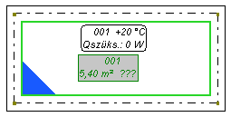
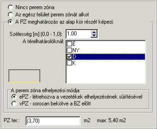
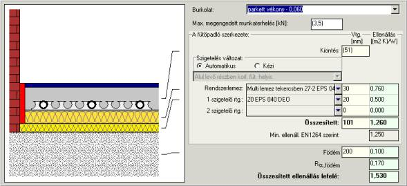
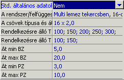

6.2. A felületfûtés alapvetõ elemei az installációban
6.2.1. Fûtõpadló
A programban használt fûtõfelület fogalom (rövidítése FF) a felületfûtés egy körét (más szóval hurkát), tehát a fûtõpadlónak vagy -falnak egy csõhurokkal borított, az osztóból induló, és az osztóba visszatérõ részletét jelenti. Ezért, ha bekövetkezik a maximális csõhossz túllépése, és a kört kisebb darabokra kell felosztani, ez a programban a FF-nek pl. két kisebb FF-re történõ felosztásával valósul meg.
! A fûtõfelület nem az egyes esztrichbõl készült, a faltól és a többi lemeztõl dilatációval elválasztott lemezt jelenti a bele ágyazott fûtõcsövekkel. Mivel egy lemez keretében több kör, tehát több FF lehet. Ha az adott körnek külön padlólemezt kell alkotnia, akkor dilatációs hézaggal kell elválasztani. Dilatációs hézag nélküli felosztás lehetõvé teszi több kör behelyezését egy padlólemezbe.
Alapértelmezésben a program az FF-et a helyiség teljes területére behelyezi. Ha az egér jobboldali gombjával az FF címkéjére kattintunk, megjelenik egy felbukkanó menü, amelyben ki lehet választani az utasítást: „A típus szabadon módosíthatóra változtatása”. Ez a padló sarkainál „csomópontok” megjelenését eredményezi, amelyek segítségével változtatni lehet a padló alakját és nagyságát a helyiségben. Ezt a mûveletet csak rendkívüli esetekben szabad végrehajtani.
A helyiségekben minden fûtõpadló alsó sarkában található színes háromszög a padlószerkezet vastagságát jelöli. Alapértelmezésben a elemek megjelenésénél „A padlószerkezet vastagságának jelölése” rajzolási opció van kijelölve. Minden FF sarkában megjelenik egy háromszög alakú jelölés, amelynek a színe a program által meghatározott, vagy a felhasználó által kézzel megadott padlószerkezettõl függ.
A rajzra továbbá be lehet tenni egy jelmagyarázatot is, amely megkönnyíti, hogy ránézésre tájékozódni lehessen a jelölések jelentésérõl (lásd az 6.6 fejezetet).
A „Sugárzó” eszközsávján található nyomógomb:
Megjelenés a képernyõn (alaprajz):

A „Fûtõpadló” elem adatai:
A fûtõpadló jele
Szövegmezõ. A fûtõfelület jelének címke jellege van, és annak azonosítására szolgál az adatok szerkesztésekor és az eredménytáblázatban. Alapértelmezésként elfogadott jel ugyanolyan, mint a helyiség jele. Ha egy helyiségben több FF van, a program a névhez sorban az ábc betûit adja hozzá (pl. Szoba_a, Szoba_b, stb.). Ide bármilyen más jelet is be lehet írni.
Helyiségben
Választási mezõ. Annak a helyiségnek a jele, ahol az FF található. A program automatikusan hozzárendeli az FF-et a helyiséghez, vagy a jelet ki lehet választani egy listából.
FF típusa
Választási mezõ. Ki lehet választani az FF típusának listájából. Alapértelmezésben a standard típus van hozzárendelve, a típus megváltoztatása után azonban megváltoznak a mezõk is az adattáblázatban. A programban négyféle típusú fûtõpadló fordul elõ:
- „Standard” – ez egy egyvezetékes, az általános alapelvek szerint
méretezett fûtõfelület.
Az újonnan beállított fûtõpadlókhoz alapértelmezésben ez a típus van
hozzárendelve.
- „Bekötésekkel fûtött” – ez az opció lehetõvé teszi, hogy (pl. az elõszobában) olyan FF-et definiáljunk, amelynek nincs saját köre, hanem a többi FF-hez vezetõ tranzit vezetékek fûtik. Az ilyen FF-et nem lehet bekötéssel bekötni, és ha már be volt kötve, a hozzá vezetõ bekötések szét lesznek bontva.
- „A visszatérõ hõmérséklet korlátozásával” – ez a felület egy kõrrel (vezetékkel) rendelkezik, mint a standard típus. A különbség azok alapszik, hogy ez egy magashõmérsékletõ rendszeren van elhelyezve, és ezért a visszatérõ vezetékre hõmérsékletkorlátozót kell elhelyezni. Ennek a fûtési körnek a méretezésénél megengedett a jelentõs kihûlés (ekkor a program nem veszi figyelmebe a katalógusban, vagy az általános adatokban megadott megengedett kihûlést).
- „Többkörös” – ez az a felület, amikor egy FU-ben egynél több vezeték van lefektetve. A meretezés során azt feltételezzük, hogy minden körnek azonos a hosszúsága és a nyomásesése (a nagyon nagy területû helyiségekben, pl. csarnokokban levõ FF-ekhez ajánlott, az egy standard FF felosztása helyett).
ti/qi [°C]
Számmezõ. A helyiség belsõ hõmérséklete, amely az adott helyiséghez van rendelve. Ezt a mezõt nem lehet az FF szintjérõl szerkeszteni. A ti/qi megváltoztatásához át kell lépni a „Konstrukció” rétegre, és ott megváltoztatni ti/qi-t az adott helyiségekben.
ti/qi alul [°C]
Számmezõ. A helyiség alatti hõmérséklet. Itt két szituáció fordulhat elõ:
- Ha az adott helyiségben a „ti/qi alatta” értékét nem adták meg, az alapértelmezett érték az adott FF-re 20 fok lesz, és szerkeszthetõ az FF szintjérõl. Ez a megoldás lehetõvé teszi különbözõ „ti/qi alatta” értékek alkalmazását ugyanahhoz a helyiséghez tartozó FF-ekhez, amikor pl. a helyiség egy része alápincézett, a másik része pedig nem.
- Ha az adott helyiségben a „ti/qi alatta” értékét nem adták meg, az érték az adott FF-ekre a helyiség adataiból lesz hozzárendelve, és nem szerkeszthetõ. Ennek megváltoztatása céljából át kell lépni a „Konstrukció” rétegre, és meg kell változtatni a „ti/qi alatta” értékét az adott helyiségekben, vagy esetleg törölni azt (beírni egy „-”).
Qff/Fff [W]
Számmezõ. A helyiség hõveszteségének az adott fûtõfelülethez rendelt része. A zárójelben levõ érték (auto) azt jelenti, hogy azt a program automatikusan határozta meg a Qff/Fff értékének felosztásakor az adott helyiségben levõ FF-ek között. Ha a helyiség adataiban a "Qff/Fff felosztása ..." mezõben (auto) van beállítva, vagyis a hõveszteség felosztása az egyes FF-ek között automatikusan történik, az FF adataiban a Q/F mezõ nem szerkeszthetõ.
Ellenkezõ esetben (amikor a Qff/Fff kézi felosztása van beállítva a helyiségben) ezt a mezõt szerkeszteni lehet az FF adataiban – vagyis megadni azt a teljesítményt, amelyet az FF-nek le kell adnia.
Beép. ter. a csövek nélkül [m2]
Számmezõ. A padlófûtés csöveivel nem lefedett beépített terület, amely azonban le van fedve állandóan, pl. beépített bútorokkal, káddal, vagy más okból van kikapcsolva a fûtésbõl. Ez a felület csökkenti az FF hasznos területét.
Beép. ter. a csövekkel [m2]
Számmezõ. A padlófûtés csöveivel lefedett beépített terület, amely (pl. eltolható bútorok alatt) bele lesz számolva a hasznos területbe. Kiegészítõen meg kell határozni, hogy milyen mértékben vesszük figyelembe az ilyen beépített terület teljesítményét.
A beép. ter. telj. figyelembevétele %
Számmezõ. A csövekkel fedett, beépített terület figyelembe vett teljesítményének százalékosan megadott értéke.
Effektív terület [m2]
Számmezõ. Az adott FF hasznos területe – a padló fûtõcsövekkel fedett területe. A zárójelben levõ érték a rajzról kijelölt területet jelenti, az FF-nek a falak belvilágába esõ területébõl levonva a falak melletti, fûtéssel nem lefedett területeket, valamint a csövekkel nem lefedett, beépített területeket. A hasznos felületet meg lehet adni kézzel. „?” beírása az alapértékhez való visszatérést eredményezi.
Fel. a. kim. [m2]
Számmezõ. Felület az anyagkimutatáshoz, az anyagkimutatásnál, mint pl. a szigetelõlemezeknél vagy rendszerlemezeknél figyelembe vett terület (vagyis a peremsávok levonása nélküli terület). Alapértelmezésben ez a falak belvilágában vett terület. Ennek a mezõnek az értékére akkor kell figyelni, ha a hasznos területet kézzel adjuk meg. Ez a mezõ lehetõvé teszi, hogy a szigetelõ anyagok kimutatásánál a teljes felületet figyelembe vegyük abban az esetben, amikor a fûtõcsövek (tehát az FF) annak csak egy részét fedik le. Ekkor ebbe a mezõbe az érték helyére zárójelben az egész helyiség területét kell írni.
Peremzóna
Összetett mezõ. A FF keretében a peremzóna szabad meghatározását lehetõvé tevõ mezõ:

Az ablak felsõ részén találhatók annak meghatározását lehetõvé tevõ kapcsolók, hogy van-e PZ, az FF csak agy részét képezi-e, vagy a teljes FF peremzóna. Ha az van kijelölve, hogy a PZ az alapkör részét alkotja, aktívvá válik az ablak középsõ része, amely lehetõvé teszi annak megadását, hogy az FF milyen pereménél van PZ, mekkora annak szélessége, és milyen típusú – a vezetékek sûrítésével hozzák-e létre (sPZ), vagy a kör elsõ részét képezi (elsõként bekötött - ePZ). Az ablak alján látható egy, a PZ aktuális felületét mutató ablakocska.
A mezõt szerkeszteni betûrövidítések beírásával, és az Enter megnyomásával: „T” – a teljes FF peremzónát alkot, „N” – nincs PZ, „S” – besûrített rész, „E” – elsõ részként.
Burkolat
Választási mezõ. Ez a mezõ a padlóburkolat típusának és hõellenállásának meghatározására szolgál. A padlóburkolat hõellenállásának nagyon nagy a jelentõsége a padlófûtés méretezésekor.
A zárójelben levõ alapértelmezett érték az általános adatokból van átvéve. A kívánt értéket be lehet írni közvetlenül a billentyûzetrõl, vagy felhasználni a rendelkezésre álló változatok listáját, amely a mezõ jobb oldalán levõ nyomógomb megnyomása után jelenik meg.
A kiválasztható lehetõségek listája a mezõben a padlófûtés kiválasztott gyártójától függ. A padlóburkolat hõellenállásának 0 ... 0,15 [(m2 K)/W] határok közé kell esnie.
Padlószerk.
Összetett mezõ. A padló szerkezete. Meg lehet nyitni egy ablakot a szerkesztéshez, amelyben választani lehet a szigetelési változatok automatikus meghatározása, vagy a szigetelési rétegek kézzel történõ megadása között:

Az ablak felsõ részében található az elfogadott padlóburkolat – megváltoztatható. Alatta található az a mezõ, amelybe be lehet írni a megengedett maximális terhelést [kN]. Alatta a kiöntés összegezett vastagsága (a beton vastagsága a csõ felett + a csõ átmérõje + a csõ és a szigetelés közötti távolság). Az alapértelmezett értéket a katalógusból beolvasott minimális kiöntési vastagság jelenti, amely a kiválasztott rögzítési rendszertõl és az alkalmazott kiöntéstõl függ.
Az ablak középsõ részén található szigetelési változat automatikus (alapértelmezett érték) és kézzel történõ megadása közötti átkapcsolást lehetõvé tevõ kapcsoló. Abban az esetben, amikor a kézzel történõ megadás van kiválasztva, ki lehet választani egyet a lista kibontása után látható változatok közül, vagy egyénileg megadni az egyes rétegeket a táblázatban. Maximum 3 szigetelési réteg áll rendelkezésre – rendszerlemez és 2 réteg szigetelõ lemez. Az alsó részen található a födém együtthatós ellenállását és vastagságát figyelembe vevõ mezõ. Ezeket a mezõket szerkeszteni lehet, ami lehetõvé teszi a tipikustól eltérõ esetek figyelembe vételét. Az ablak jobb alsó sarkában van megjelenítve a lefelé ható összegezett ellenállás [(m2 K,)/W], ami a méretezés során figyelembe lesz véve.
Fektetési variáció
Választási mezõ. Meg lehet adni a fûtõcsövek fektetési módját az FF-en belül. Az automatikus rajzolás során a program a kiválasztott fektetési módot fogja alkalmazni. Ennek a mezõnek részben információs jellege van, azonban egyes opciók más mezõket is befolyásolnak. Az „Egysz. meander” (egyszeres meander) opció kiválasztása után nincs lehetõség a vezetékek besûrítésével létrehozott peremzóna (sPZ) alkalmazására – a program hibaüzenetet jelenít meg a méretezésre való továbblépéskor.
Bekötések … [m]
Összetett mezõ. Ez a mezõ az adott FF-en átmenõ bekötések összegezett hosszát jeleníti meg. A bekötések tábla részletes leírása a 6.5.3. fejezetben található.
Címketipus
Választási mezõ. Választási lehetõség a rajzon levõ FF-címke fajtájának listájából. A „Konfigurálás” kiválasztása után megnyílik az elemek kinézetének ablaka, amelyben létre lehet hozni (másolással) és konfigurálni a rajzon levõ elemek címkéjét. Egy új címke megadása után, az hozzáférhetõvé válik a legördülõ listában a táblázatban.
Címke a nyomtatáson
Választási mezõ. Lehetõvé teszi az FF címkéjét tartalmazó mezõ kinyomtatásának kikapcsolását.
ΔPmax [kPa]
Számmezõ. A minimális nyomásesés az FF-en. A zárójelben levõ érték az általános adatokból átvett, alapértelmezett értéket jelenti.
Az elem állapota:
Választási mezõ. Az elem aktuális állapotának listájából való kiválasztás lehetõsége: meglevõ vagy tervezett. A választásnak ebben a mezõben kizárólag az anyagkimutatásra van hatása.
Std. általános adatok
Választási mezõ. Kiválasztható, hogy az adott FF az általános adatokat használja-e. Az alapértelmezett beállítás: „Igen”. A „Nem”-re való átkapcsolás után az adattáblázatban további mezõk jelennek meg, amelyek lehetõvé teszik az általános adatok módosítását:

Ezek a mezõk lehetõvé teszik a rögzítési rendszer megváltoztatását egy másfajtára, mint az általános adatokban kiválasztott alapértelmezett, az alkalmazott csõ típusúnak és / vagy átmérõjének módosítását, a rendelkezésre álló fektetési kiosztás módosítását külön a BZ-re és a PZ-re, valamint a körben a közeg kihûlése korlátainak megváltoztatását (hõmérsékletkülönbség – Dt/Dq), úgyszintén külön a BZ-re és a PZ-re.
A programban meg lehet rajzolni a fûtõpadlót kézzel is a helyiségben, a „Fûtõpadló (kézi rajzolás)” elem felhasználásával. Ebben az esetben az FF alakját a felhasználó határozza meg.
¨ A tervezés meggyorsítása érdekében a programban
létezik a fûtõfelületek gyors behelyezésének funkciója. Ehhez az „FF beállítása
minden helyiségbe” utasítást használjuk fel az „Elemek” fõmenübõl, vagy a
„Sugárzó” eszközsávján található  ikonra kattintunk.
ikonra kattintunk.